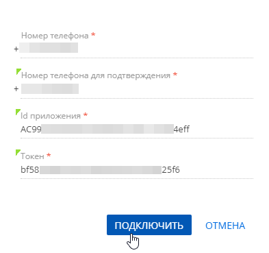

WhatsApp является одним из продуктов компании Facebook, поэтому для настройки интеграции с этим мессенджером вам необходимы:
- Учетная запись в Facebook Business Manager. Если вы еще не зарегистрированы, воспользуйтесь инструкцией Facebook (на английском).
- Интеграция с партнерской платформой Facebook, которая предоставляет доступ к WhatsApp Business API. На данный момент такой платформой является Twilio.
Для ознакомления с возможностями интеграции с WhatsApp вы можете зарегистрировать тестовую учетную запись с ограниченным доступом к функциональности. Чтобы воспользоваться всеми преимуществами интеграции с WhatsApp, необходимо пройти верификацию ваших учетных записей. Это поможет обезопасить ваши данные и ваших клиентов. В общем случае настройка интеграции с WhatsApp состоит из следующих шагов:
- Настроить в Twilio тестовую учетную запись для ознакомления (опционально). Подробнее >>>
- Настроить в Twilio учетную запись для бизнеса. Подробнее >>>
- Настроить в Creatio канал чатов WhatsApp. Подробнее >>>
Для канала WhatsApp действуют следующие ограничения на пересылку файлов:
- Изображения форматов *.jpg, *.jpeg, *.png.
- Аудиофайлы форматов *.mp3, *.ogg, *.amr.
- Документы формата *.pdf.
- Видео формата *.mp4.
- Максимальный размер файла — 16 Mб.
Подробнее о допустимых форматах файлов читайте в документации Twilio.
Шаг 1. Настроить тестовую учетную запись (опционально)
Настройка тестовой учетной записи в Twilio не требует верификации и подключения платных услуг платформы. Она позволяет протестировать возможности интеграции Creatio с WhatsApp, обмена сообщениями и файлами в чате. Настройка тестовой интеграции состоит из следующих шагов:
- Настроить в Twilio тестовую учетную запись. Подробнее >>>
- Настроить в Creatio канал чатов WhatsApp. Подробнее >>>
Настроить тестовую учетную запись в Twilio
-
Зарегистрируйтесь на https://www.twilio.com/try-twilio. После завершения регистрации вы сможете настроить тестовую интеграцию. Также вам будет предоставлен лимит средств для проверки функциональности.
-
Укажите endpoint URL для передачи чатов в Creatio. Для этого перейдите в настройки “песочницы” (“sandbox”) в Twilio:
Twilio Console — > Programmable Messaging — > Settings — > WhatsApp Sandbox Settings — > Sandbox Configuration и в поле WHEN A MESSAGE COMES IN введите значение “https://sm-receiver.creatio.com/api/webhook/LeadGen/whatsapp”.
-
Настройте “песочницу” (“sandbox”) в Twilio:
Twilio Console — > Programmable Messaging —> Try it out —> Send a WhatsApp message.
- Отправьте код, сформированный Twilio, через WhatsApp с вашего номера на номер вашей тестовой учетной записи. Если сообщение будет доставлено успешно, вы получите уведомление в Twilio. В результате ваш номер будет добавлен в Sandbox Participants.
-
Если вы хотите использовать для тестирования несколько номеров, повторите шаг 3 для каждого из них. Просмотреть список номеров, которые вы используете для тестовых целей можно в списке Sandbox Participants:
Twilio Console — > Programmable Messaging — > Settings — > WhatsApp Sandbox Settings — > Sandbox Participants.
После этого вы сможете получать на номер вашей тестовой записи сообщения от номеров, добавленных в Sandbox Participants.
Настроить тестовый канал WhatsApp в Creatio
Перед настройкой канала убедитесь, что в вашем приложении заполнены системные настройки “Адрес Identity сервера” (код “IdentityServerUrl”), “Идентификатор приложения для Identity сервера” (код “IdentityServerClientId”) и “Секретный ключ для Identity сервера” (код “IdentityServerClientSecret”). Если данные системные настройки не заполнены, обратитесь в службу поддержки Creatio.
- Перейдите в дизайнер системы по кнопке
 .
. - Откройте раздел Настройка чатов.
- В области Каналы нажмите кнопку
 . В появившемся меню выберите “WhatsApp”.
. В появившемся меню выберите “WhatsApp”. - В открывшейся мини-карточке заполните параметры канала:
- Номер телефона — номер вашей тестовой учетной записи в Twilio.
- Номер телефона для подтверждения — номер телефона, который входит в Sandbox Participants в Twilio.
- Id приложения — SID тестовой учетной записи Twilio, который указан в поле ACCOUNT SID Twilio Console.
- Токен — токен, сгенерированный Twilio для тестовой учетной записи. Указан в поле AUTH TOKEN Twilio Console.
- Нажмите Подключить.
- Активируйте канал чата. Для этого в открывшейся мини-карточке:
- Установите индикатор в положение Активен.
- Выберите очередь чата, в которой будут обрабатываться сообщения, полученные по данному каналу.
- Нажмите Применить.
В результате в Creatio будет подключен тестовый канал WhatsApp, вы сможете проверить возможности получения и обработки сообщений и файлов.
Шаг 2. Настроить учетную запись для бизнеса
Чтобы воспользоваться всеми возможностями, которые предоставляет Twilio для бизнеса, вам необходимо зарегистрироваться на платформе и пройти верификацию. Подробнее читайте в документации Twilio (на английском).
В общем случае порядок настройки выглядит следующим образом:
- Зарегистрируйтесь в Facebook Business Manager.
- Если у вашей компании уже зарегистрирована учетная запись, то перейдите к шагу 2.
- Если учетной записи еще нет, то следуйте инструкциям в документации Facebook.
- Зарегистрируйтесь в Twilio.
-
Укажите endpoint URL для передачи чатов в Creatio. Для этого перейдите в настройки “песочницы” (“sandbox”) в Twilio:
Twilio Console — > Programmable Messaging — > Settings — > WhatsApp Sandbox Settings — > Sandbox Configuration и в поле WHEN A MESSAGE COMES IN введите значение “https://sm-receiver.creatio.com/api/webhook/LeadGen/whatsapp”.
- Пройдите верификацию WhatsApp.
- Отправьте в WhatsApp запрос на активацию вашего номера Twilio. В поле Are you working with an ISV, SI, or third party укажите ”No” (Нет). После отправки запроса вы должны получить на указанный при заполнении формы email-адрес письмо с предварительным подтверждением и описанием дальнейших шагов.
-
Вы можете использовать свой номер телефона или приобрести номер Twilio.
- Разрешите Twilio отправлять сообщения от вашего имени. Для этого перейдите в Facebook Business Manager и подтвердите запрос Twilio на отправку сообщений от имени вашей компании. Вы можете найти данный запрос:
- На business.facebook.com —> Настройки —> Настройки компании —> Запросы.
- Перейти по ссылке из электронного письма с предварительным подтверждением вашего номера телефона
-
Пройдите проверку компании в Facebook Business Manager. Если ваша компания была подтверждена ранее, то переходите на следующий шаг. Для выполнения проверки перейдите:
Facebook Business Manager —> Настройки —> Настройки компании —> Центр безопасности и нажмите кнопку Начать подтверждение или Продолжить в разделе Подтверждение компании.
Подробно процесс подтверждения бизнеса описан в документации Facebook.
- Подтвердите завершение регистрации, перейдя по ссылке из электронного письма от Twilio.
В результате в течение 24 часов после завершения верификации вам будет подключена возможность общаться с клиентами по WhatsApp с зарегистрированного номера.
Шаг 3. Добавить канал WhatsApp в Creatio
Перед настройкой канала убедитесь, что в вашем приложении заполнены системные настройки “Адрес Identity сервера” (код “IdentityServerUrl”), “Идентификатор приложения для Identity сервера” (код “IdentityServerClientId”) и “Секретный ключ для Identity сервера” (код “IdentityServerClientSecret”). Если данные системные настройки не заполнены, обратитесь в службу поддержки Creatio.
- Перейдите в дизайнер системы по кнопке .
- Откройте раздел Настройка чатов.
- В области Каналы нажмите кнопку . В появившемся меню выберите “WhatsApp”.
- В открывшейся мини-карточке заполните параметры канала:
- Номер телефона — номер телефона, подключенный и верифицированный в Twilio.
- Номер телефона для подтверждения — номер телефона, на который придет сообщение для подтверждения канала.
- Id приложения — SID учетной записи Twilio, который указан в поле ACCOUNT SID Twilio Console.
- Токен — токен, сгенерированный Twilio для вашей учетной записи. Указан в поле AUTH TOKEN Twilio Console.
- Нажмите Подключить.
Рис. 1 — Пример настройки канала WhatsApp
-
Если верификация канала прошла успешно, то откроется мини-карточка редактирования канала. Чтобы сообщения из созданного канала были доступны для обработки в коммуникационной панели, активируйте канал и привяжите его к очереди. Для этого:
- Установите индикатор в положение Активен.
- Выберите очередь чата, в которой будут обрабатываться сообщения, полученные по данному каналу.
- Укажите язык, на котором предполагаете получать сообщения по данному каналу. Это необходимо, чтобы операторы могли использовать шаблоны быстрых ответов на языке клиентов.
- Нажмите Применить.
В результате в Creatio будет подключен канал WhatsApp, операторы контакт-центра смогут обрабатывать сообщения данного канала на коммуникационной панели Creatio. Вся история переписки будет сохранена в разделе Чаты.